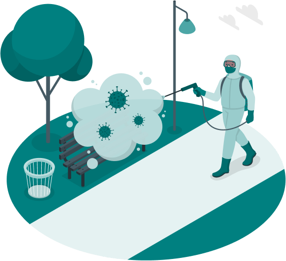

Oferta
Dezynsekcja
To proces zwalczania szkodliwych owadów, typu karaluchy, pluskwy czy usuwanie gniazd os i szerszeni a także wielu innych insektów
Czytaj więcej...Deratyzacja
Polega na eliminacji szkodliwych gryzoni, takich jak szczury i myszy, z myślą o zapobieganiu szkodom materialnym i ochronie zdrowia
Czytaj więcej...Dezynfekcja
Koncentruje się na niszczeniu drobnoustrojów, jakimi są bakterie, wirusy i grzyby, w celu zapewnienia higieny i zapobiegania chorobom
Czytaj więcej...Co nas wyróżnia ?

Bezpieczensto
Korzystamy wyłącznie z najwyższej jakości, bezpiecznych środków, które skutecznie eliminują zagrożenia, nie stwarzając przy tym ryzyka dla zdrowia mieszkańców lub zwierząt domowych
Dyskrecja
Przyjeżdżamy nieoklejonym busem, aby zapewnić całkowitą anonimowość oferowanych usług, za sprawą czego sąsiedzi czy inne osoby z zewnątrz nie dowiedzą się o powodzie naszej wizyty
Umiejętności
Dysponujemy bogatą wiedzą, którą lubimy się dzielić, certyfikatami oraz wieloletnim doświadczeniem, dzięki czemu możesz być pewien, że nasze działania są na najwyższym poziomie
Sprawdź nasze realizacje i certyfikaty
Zapisz się na darmowy audyt dla firm
Przeprowadzimy wstępna analizę określając miejsca i dogodne warunki mogące powodować zagrożenia sanitarne ze strony szkodników
 Skontaktuj się z namiNasze usługi DDD
Dezynsekcja
jest nie tylko środkiem zapobiegawczym w utrzymaniu higieny, ale także skuteczną metodą ochrony przed chorobami przenoszonymi przez insekty, takimi jak salmonella, borelioza, kleszczowe zapalenie mózgu, a także zagrażającymi życiu owadami błonkoskrzydłym. Właściwie przeprowadzona dezynsekcja zarówno eliminuje istniejący problem, ale również zapobiega jego nawrotom, tworząc przy tym całkowicie bezpieczne i higieniczne warunki do życia oraz pracy.

Dezynsekcja obejmuje:
Deratyzacja
to kluczowy element w walce z gryzoniami pozwala zapobiegać rozprzestrzenianiu się groźnych chorób, m.in. leptospirozy, salmonellozy czy hantawirusa. Regularnie przeprowadzana deratyzacja chroni przed uszkodzeniami infrastruktury, które mogą być spowodowane przez gryzonie, jednocześnie minimalizując ryzyko ponownego pojawienia się problemu. Tym samym przyczynia się do utrzymania czystości i higieny, tworząc bezpieczne środowisko.
Deratyzacja obejmuje:
Dezynfekcja
jest bardzo ważnym etapem w utrzymaniu czystości, ale również skuteczną metodą eliminacji patogenów, takich jak bakterie, wirusy i grzyby, które mogą powodować poważne choroby, w tym salmonellę, grypę. Skuteczna oraz regularna dezynfekcja pozwala na redukcję ryzyka infekcji jak i zapewnia bezpieczne warunki w miejscach publicznych, zakładach pracy i domach. Zadbaj o zdrowie swoje i osób w twoim otoczeniu, korzystając z usług profesjonalistów!
Dezynfekcja obejmuje:
Monitoring haccp
1. Wstępna analiza zagrożeń
Przeprowadzimy identyfikacje zagrożeń związanych z obecnością szkodników (gryzonie, owady) i ich potencjalny wpływ na higienę oraz bezpieczeństwo żywności, obiektów i zdrowia publicznego.
2. Rozpoznanie punktów kontroli
Wyznaczymy miejsca, gdzie istnieje największe ryzyko występowania szkodników (np. magazyny, pomieszczenia produkcyjne) i gdzie można monitorować i kontrolować ich obecność.
3. Ustalenie zakresu działań
Określimy krytyczne limity, takie jak maksymalna dopuszczalna liczba szkodników w danym obszarze, które muszą być przestrzegane, aby utrzymać bezpieczeństwo i higienę.
4. Wprowadzenie monitoringu
Opracujemy procedury regularnego monitorowania miejsc najbardziej narażonych na obecność szkodników, np. poprzez systematyczne przeglądy pułapek, wizualne inspekcje lub stosowanie czujników.
5. Podjęcie odpowiednich działań
W przypadku przekroczenia ustalonych limitów nasz technik DDD podejmie działania korygujące, takie jak intensyfikacja deratyzacji lub dezynsekcji, aby przywrócić kontrolę nad sprzyjającą sytuacją.
6. Procedury weryfikacyjne
Regularnie sprawdzamy skuteczność podjętych przez nas działań, np. poprzez audyty lub testy, które potwierdzają, że monitoring i kontrola szkodników spełniają nasze oczekiwania.
7. Zarządzanie dokumentacją
Poprowadzimy dokumentacje wszystkich procedur związanych z monitoringiem szkodników, działań korygujących i weryfikacyjnych, co zapewnia pełną zgodność z wymaganiami HACCP, GMP i GHP.
Opinie
Polecam pana Piotrka pomógł nam pozbyć się pluskiew z naszego mieszkania. Wszystko zostało wykonane w pełnej dyskrecji za co dziękujemy
 Agnieszka
Agnieszka
Firma DDD BEST usunęła mi gniazdo szerszeni w trudno dostępnym miejscu, dzięki czemu końcu czujemy się bezpiecznie. Gorąco polecam
Stanisław
Pan Piotr usunął nam gniazdo os jeszcze tego samego dnia, w którym się skontaktowaliśmy, a co najważniejsze cały proces przebiegł szybko i skutecznie
Katarzyna
Faq
Dlaczego warto wybrać specjalistę ?
1. Nieprawidłowe stosowanie środków chemicznych może być niebezpieczne dla zdrowia i środowiska. Specjalista wie, jak ich używać w sposób kontrolowany i bezpieczny. metod działania.
2. Korzystamy z atestowanych preparatów i sprzętu, które są bardziej skuteczne i bezpieczne niż środki dostępne w sklepach.
3. Samodzielne próby mogą być czasochłonne i nieskuteczne, co prowadzi do konieczności ponownego podejmowania działań. Specjalista rozwiązuje problem szybko i trwale.
4. Wybierając specjalistę, nie musisz martwić się o detale – zajmiemy się nimi, dzięki czemu Ty możesz skupić się na swoich codziennych obowiązkach.
5. Specjalista wie, jak chronić osoby oraz zwierzęta przed potencjalnymi zagrożeniami związanymi z procesem dezynsekcji, dezynfekcji czy deratyzacji.
6. Nie tylko rozwiążemy problem, ale również udzielimy wskazówek, jak zapobiegać jego nawrotom w przyszłości
W jakich rejonach działamy ?
Nasza działalność obejmuje głównie województwa: śląskie, łódzkie oraz opolskie, z centralnym punktem w Częstochowie.
Obsługujemy również takie miasta i okolice jak międzyinnymi: Bytom, Katowice, Kłobuck, Łódź, Opole, Piotrków Trybunalski, Radomsko, Wieluń, oraz prawdopodobnie twoje miasto😉
Czy nasze usługi są w pełni bezpiecznie ?
1. Korzystamy wyłącznie z preparatów zatwierdzonych przez odpowiednie instytucje, co gwarantuje bezpieczeństwo dla ludzi, zwierząt domowych oraz środowiska.
2. Nasz zespół to specjaliści posiadający wiedzę i doświadczenie w zakresie metod dezynsekcji, dezynfekcji i deratyzacji, co minimalizuje ryzyko błędów.
3. Każdy przypadek traktujemy indywidualnie, dostosowując środki i metody do specyficznych potrzeb klienta oraz warunków otoczenia.
4. Przed przystąpieniem do działań dokładnie informujemy klientów o stosowanych środkach i procedurach, aby zapewnić ich pełne zrozumienie i poczucie bezpieczeństwa.
5. Przestrzegamy obowiązujących norm i przepisów, a nasza firma posiada wymagane certyfikaty potwierdzające jakość świadczonych usług.
6. Po zakończeniu zabiegów przekazujemy zalecenia dotyczące bezpiecznego korzystania z przestrzeni oraz ewentualnych działań zapobiegawczych.
Jak przygotować się do odpluskwiania ?
1. Wszystkie tekstylia, takie jak pościel I ubrania, należy zebrać w szczelne worki, aby później wyprać je w temperaturze co najmniej 60°C.
2. Aby zapewnić łatwy dostęp do wszystkich zakamarków, przesuń meble od ścian. Należy także zdjąć obrazy i inne dekoracji, aby nie uległy zniszczeniu.
3. Dokładne odkurzanie i mycie podłóg pomoże usunąć jaja pluskiew i osobniki dorosłe, oraz zapewni lepszą skuteczność środkom do dezynsekcji. Worek należy natychmiast wyrzucić, zabezpieczając go szczelnie workiem.
4. Opróżnij szafki i szuflady, szczególnie te znajdujące się w sypialniach i w pobliżu łóżek.
5. Elektronika powinna być odłączona od prądu i zabezpieczona np. folią lub workami na śmieci, aby uniknąć uszkodzeń i zalania.
6. Żywność i leki powinny być przechowywane w szczelnych pojemnikach lub lodówce, aby zapobiec ich zanieczyszczeniu środkami chemicznymi.
7. Upewnij się, że Twoje zwierzęta domowe i rośliny są bezpieczne i nie zostaną wystawione na działanie środków chemicznych.
8. Minimum 2 godziny po zabiegu należy dokładnie wywietrzyć mieszkanie, aby usunąć resztki środków chemicznych.
9. Po całkowitym wywietrzeniu mieszkania należy ponownie odkurzyć pomieszczenia, w tym martwe szkodniki, oraz ponownie umyć wszystkie powierzchnie, szczególnie należy zwrócić uwagę na te użytkowe - blaty, stoliki, szafki.
Co należy wykonać po odpluskwianiu ?
1. Po dwóch godzinach od zabiegu wróć i wywietrz pomieszczenia.
2. Zmyj wodą z detergentem wszystkie blaty, stoliki i stoły oraz przedmioty mające kontakt ze skórą. waga! jeśli w pomieszczeniu przebywają dzieci, osoby starsze lub zwierzęta domowe należy bardzo dokładnie zmyj wodą z detergentem wszystkie powierzchnie, w tym podłogi kilkukrotnie. gdy nie ma takiej potrzeby, pozostawić podłogi i powierzchnie nieużytkowe nieumyte minimum przez 10 dni.
3. Załóż nową czystą narzutę, prześcieradło, poszewki i pościel, aby nie mieć kontaktu z opryskiwanymi powierzchniami.
4. Ubrania, poszewki, koce czy prześcieradła uprzednio zapakowane szczelnie do worków należy wyprać w 60°C.
Zaleca się powtórzenie zabiegu po 2 tygodniach, ponieważ środki chemiczne nie działają na jaja składane przez pluskwy.